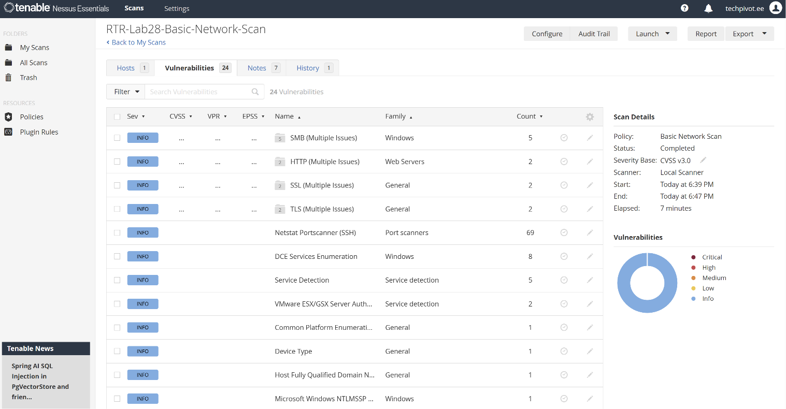
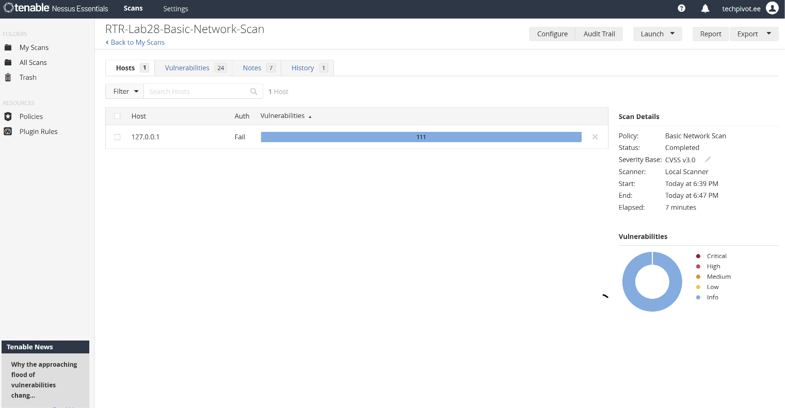
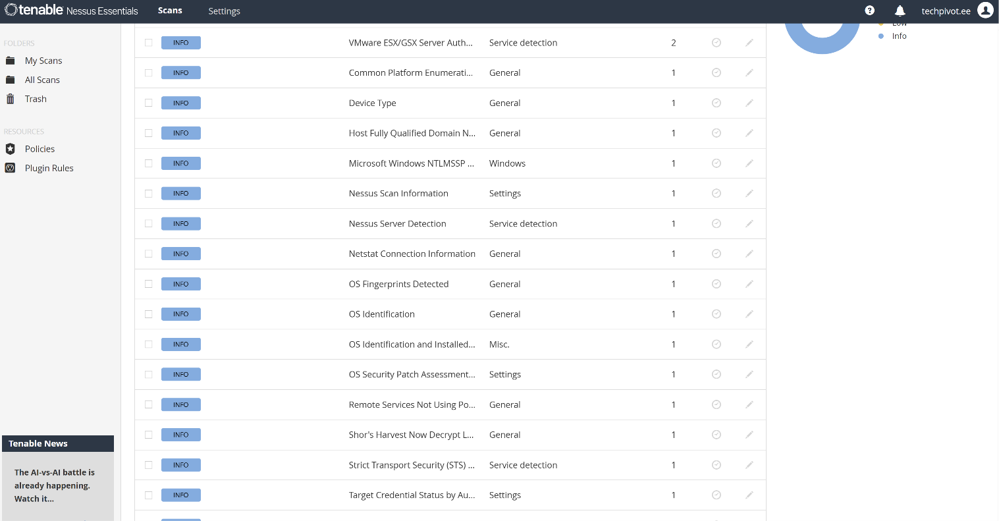
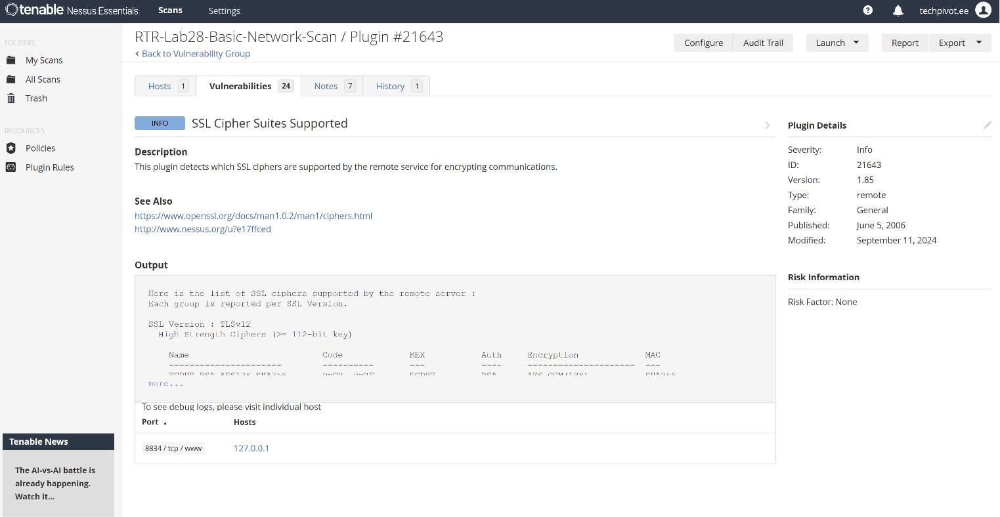

Basic network scan of localhost using Nessus Essentials 10.12.0
| Field | Detail |
|---|---|
| Scanner | Nessus Essentials 10.12.0 |
| Scan Name | RTR-Lab28-Basic-Network-Scan |
| Target | 127.0.0.1 (localhost) |
| Policy | Basic Network Scan |
| Severity Base | CVSS v3.0 |
| Scanner Type | Local Scanner |
| Start | Today at 6:39 PM |
| End | Today at 6:47 PM |
| Elapsed | 7 minutes |
| Severity | Finding | Family | Count |
|---|---|---|---|
| INFO | SMB (Multiple Issues) | Windows | 5 |
| INFO | HTTP (Multiple Issues) | Web Servers | 2 |
| INFO | SSL (Multiple Issues) | General | 2 |
| INFO | TLS (Multiple Issues) | General | 2 |
| INFO | Netstat Portscanner (SSH) | Port Scanners | 69 |
| INFO | DCE Services Enumeration | Windows | 8 |
| INFO | Service Detection | Service Detection | 5 |
| INFO | SSL Cipher Suites Supported | General | 1 |
| INFO | Common Platform Enumeration | General | 1 |
| INFO | Device Type | General | 1 |
| INFO | Host Fully Qualified Domain Name | General | 1 |
| INFO | Microsoft Windows NTLMSSP | Windows | 1 |
| Field | Detail |
|---|---|
| Plugin ID | 21643 |
| Name | SSL Cipher Suites Supported |
| Severity | INFO |
| Family | General |
| Risk Factor | None |
| Port | 8834 / tcp / www |
| Host | 127.0.0.1 |
| Published | June 5, 2006 |
| Modified | September 11, 2024 |
All 24 unique findings returned an Info severity rating, meaning no exploitable vulnerabilities were detected on the localhost target. Info-level findings enumerate the attack surface — open ports, running services, SSL configurations, and system metadata — without indicating active risk.
The high instance count (111) relative to unique findings (24) reflects multiple plugin instances firing across different ports and services. For example, Netstat Portscanner alone detected 69 open connections.
Key observations:



